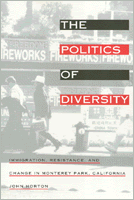

<body bgcolor="#FFFFFF" text="#000000" link="#0000FF" vlink="#CC0000" alink="#CC0000"><center><hr width="350" size="1" align="center" noshade>In an era of thriving anti-immigrant sentiments, this story of Monterey Park, California demonstrates how long-time residents and new immigrants deal with commonality as well as diversity<hr width="350" size="1" align="center" noshade><p><a href="https://cdcshoppingcart.uchicago.edu/Cart/ChicagoBook.aspx?ISBN=9781566393270&&PRESS=temple" target="_top">Buy this book!</a> | <a href="https://cdcshoppingcart.uchicago.edu/Cart/Cart.aspx?PRESS=temple" target="_top">View Cart</a> | <a href="https://cdcshoppingcart.uchicago.edu/Cart/Cart.aspx?PRESS=temple" target="_top">Check Out</a></p><p></p></center><!--none//--><h1>The Politics of Diversity</h1>
<H2>Immigration, Resistance, and Change in Monterey Park, California</H2>
<h3>John Horton</h3>
<P>cloth 1-56639-327-2 $69.95, Jul 95, <FONT COLOR=#990033>Out of Stock Unavailable</FONT>
<br>paper 1-56639-328-0 $30.95, Jul 95, <FONT COLOR=#990033>Out of Stock Unavailable</FONT>
<br>Electronic Book 1-43990-642-4 $31.95 <FONT COLOR=#990033>Out of Stock Unavailable</FONT>
<BR> 296 pp
6x9
13&nbsp;tables 3&nbsp;map(s) 19&nbsp;halftones
</P><h3 align="center"><P><font color="#996633">Robert E. Park Award, Community and Urban Section of the American Sociological Association,
1996</font></P>
</H3>
<P>Advertised in Asia as "The Chinese Beverly Hills," this small city minutes east of downtown Los Angeles, became by the late 1970s a regional springboard for a new type of Chinese immigration&#151suburban and middle class with a diversified and globally-oriented economy. Freed from the
isolation of old Chinatowns, new immigrants now confronted resistance from more established Anglo, Asian American, and Latino neighbors, whose opposition took the form of interconnected "English Only" and slow-growth movements.
<p>In <i>The Politics of Diversity</i>, a multiethnic team of researches employ ethnography, interviewing, and exit polls to capture the process of change as newcomers and established residents come to terms with the meaning of diversity and identity in their everyday lives. The result is an engaging grass-roots account of immigration and change: the decline of the loyal old-boy Anglo network; the rise of women, minorities, and immigrants in the political scene; and a transformation of ethnic and American identities.
<BR>&nbsp;<h2>Excerpt</h2><P>Excerpt available at <a href="http://www.temple.edu/tempress">www.temple.edu/tempress</a></p>
<BR>&nbsp;<h2>Contents</h2><P>
<p>Maps, Tables, and Photographs
<br>Acknowledgments
<br>Introduction: Multiethnic L.A.
<br>1. From Monterey Park to Little Taipei
<br>2. Building Community at the Grassroots
<br>3. Political Breaks and Transitions
<br>4. The Backlash: Slow Growth and English Only
<br>5. The Struggle for Minority and Immigrant Rights
<br>6. From Nativism to Ethnic and Interethnic Politics
<br>7. Dilemmas of Diversity
<br>8. Crisis of American, Ethnic, and Immigrant Identities
<br>9. Negotiating a Culture of Diversity
<br>10. The Practice and Politics of Diversity
<br>Notes
<br>Index
</P><BR>&nbsp;<H2>About the Author(s)</H2>
<P><b>John Horton</b> is Professor Emeritus of Sociology at the University of California, Los Angeles.</P>
<BR><H2>Subject Categories</H2>
<p><A HREF="/tempress/race.html" TARGET="_top">Race and Ethnicity</a>
<BR><A HREF="/tempress/asian_amer.html" TARGET="_top">Asian American Studies</a>
<BR><A HREF="/tempress/political.html" TARGET="_top">Political Science and Public Policy</a>
</p>
<p align="center"><a href="https://cdcshoppingcart.uchicago.edu/Cart/ChicagoBook.aspx?ISBN=9781566393270&&PRESS=temple" target="_top">Buy this book!</a> | <a href="https://cdcshoppingcart.uchicago.edu/Cart/Cart.aspx?PRESS=temple" target="_top">View Cart</a> | <a href="https://cdcshoppingcart.uchicago.edu/Cart/Cart.aspx?PRESS=temple" target="_top">Check Out</a></p><p><font face="Arial" size="1"><a href="copyright.html" onMouseOver="window.status='Web Copyright Policy';return true;" onMouseOut="window.status=''" title="Web Copyright Policy">&copy;</a> 2015 <a href="http://www.temple.edu" target="new" onMouseOver="window.status='Link to Temple University home page';return true;" onMouseOut="window.status=''" title="Link to Temple University home page">Temple University</a>. All Rights Reserved. http://www.temple.edu/tempress/titles/889_reg.html</font></p>